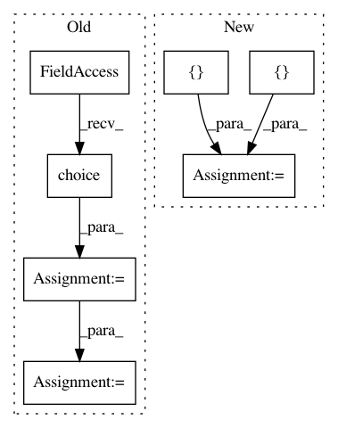

ebae4ed91a657b1eac389a6d380c165a295cd822,tests/layers/losses/test_rcnn.py,TestRCNN,test_call,#TestRCNN#,7
Before Change
def test_call(self):
classes = 3
scores = numpy.random.choice(range(classes), (2,))
target_deltas = keras.backend.ones((1, 2, 4 * classes))
target_scores = keras.utils.to_categorical(scores)
target_scores = keras.backend.expand_dims(target_scores, 0)
target_scores = keras.backend.cast(target_scores, keras.backend.floatx())
output_deltas = keras.backend.ones((1, 2, 4 * classes))
output_scores = keras.utils.to_categorical(scores)
output_scores = keras.backend.expand_dims(output_scores, 0)
output_scores = keras.backend.cast(output_scores, keras.backend.floatx())
layer = keras_rcnn.layers.RCNN()
After Change
classes = 3
target_deltas = keras.backend.ones((1, 2, 4 * classes))
target_scores = keras.backend.variable([[0, 0, 1], [0, 0, 1]])
target_scores = keras.backend.expand_dims(target_scores, 0)
target_scores = keras.backend.cast(target_scores, keras.backend.floatx())
output_deltas = keras.backend.ones((1, 2, 4 * classes))
In pattern: SUPERPATTERN
Frequency: 3
Non-data size: 7
Instances
Project Name: broadinstitute/keras-rcnn
Commit Name: ebae4ed91a657b1eac389a6d380c165a295cd822
Time: 2018-01-30
Author: allen.goodman@icloud.com
File Name: tests/layers/losses/test_rcnn.py
Class Name: TestRCNN
Method Name: test_call
Project Name: CyberReboot/NetworkML
Commit Name: a9e42a7f1d0ea64be0371a6f7aff5039b5a48f4f
Time: 2017-11-15
Author: CStephenson970@gmail.com
File Name: NodeClassifier/iterator.py
Class Name: BatchIterator
Method Name: gen_data
Project Name: flow-project/flow
Commit Name: 5dd2b15292dbe0b8d1185a9e6dcbb588d38c9cfe
Time: 2018-02-01
Author: akreidieh@gmail.com
File Name: flow/envs/base_env.py
Class Name: Env
Method Name: setup_initial_state